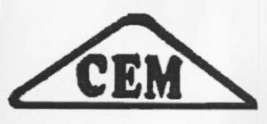

Trade Mark Journal No.2025/034 22 August 2025
WO0000001867519 (11,21)
Office of origin: Turkey
Date of International Registration:25 February 2025
Date of designation in the UK:
25 February 2025

- Class 11
- Apparatus for heating and steam generating installations, air valves for steam heating installations, boiler pipes (tubes) for heating installations, central heating radiators, heating elements, gas boilers, gas burners, heat regenerators, hot water bottles, expansion tanks for central heating installations; apparatus for ventilating, air conditioners for vehicles, air conditioning apparatus, air conditioning installations, air cooling apparatus, air filtering installations, air purifying apparatus and machines, air sterilisers, air-conditioning fans, fans (parts of air conditioning installations), ventilation (air conditioning) installations and apparatus, ventilation (air conditioning) installations for vehicles; refrigerating and cooling installations, cooling installations for liquids, cooling installations for waters, freezers, refrigerating containers; cookers, boilers, barbecues, cooking rings, electric pressure cookers (autoclaves), electric kettles; hair driers, hand drying apparatus for washrooms, water softening apparatus, water filtering apparatus, water purification installations, water purifying apparatus and machines; electric blankets not for medical purposes, electrically heated carpets, electric heating cushions (pads) not for medical purposes, electric or non-electric footwarmers; aquarium filtration apparatus; heating apparatus for solid, liquid or gaseous fuels, baker's ovens; drying apparatus and installations; refrigerating apparatus and machines, refrigerating chambers, refrigerators; nuclear reactors; incandescent burners; pasteurisers; electric laundry dryers.
- Class 21
- Household or kitchen utensils and containers (not of precious metal or coated therewith); manual mixers (cocktail shakers), non-electric blenders for household purposes, hand operated mills for domestic purposes, non-electric fruit presses for household purposes, graters, hand-operated coffee grinders; combs and sponges; brushes (except paint brushes), dishwashing brushes, brushes for cleaning tanks and containers, brushes for footwear; brush making materials, steel wool for cleaning, sponges for household purposes, sponge holders; articles for cleaning purposes, cloths for cleaning, gloves for household purposes, non-electric polishing apparatus and machines for household purposes, carpet sweepers, carpet beaters (hand instruments); toothbrushes, toothbrushes (electric), toothpick holders (not of precious metal), hair for brushes, shaving brushes; glassware, porcelain and earthenware not included in other classes, buckets, dustbins for domestic purposes, earthenware saucepans, paper plates, plate glass (raw material), butter dishes, dishes not of precious metal, paper trays for domestic purposes, trays for domestic purposes (not of precious metal), non-electric coffee pots (not of precious metal), sieves (household utensils), basting spoons for kitchen use, spatulas (kitchen utensils), washtubs, basins (bowls), glass bowls, egg cups (not of precious metal), cake molds (moulds), decanters, flower pots, dishes for soap, soap dispensers, soap holders, toilet paper holders, baby baths (portable), ice buckets, ice cube molds (moulds), heat-insulated containers, drinking flasks for travellers, fitted picnic baskets (including dishes), cups not of precious metal, cups of paper or plastic, bread baskets (domestic), bread boards, non-electric cooking utensils, non-electric heaters for feeding bottles, grills (cooking utensils), gridiron supports; ironing boards, ironing board covers (shaped), drying racks for washing, cages for household pets, toilet cases, watering cans, mangers for animals, bird baths, rings for birds; statues of porcelain, terra cotta or glass, figurines (statuettes) of porcelain, terra cotta or glass; bottles, glass jars (carboys), demijohns; mouse traps, insect traps, fly catchers (traps or whisks), cases adapted for toilet utensils; perfume sprayers, perfume vaporizers, perfume burners; cosmetic utensils, appliances for removing make-up (non-electric), powder puffs; watering devices; corkscrews, shoe horns; toothpicks, pipettes (wine-tasters); indoor terrariums (plant cultivation); unworked or semi-worked glass (except glass used in building), mosaics of glass, not for building, glass wool other than for insulation.
ERKAN KARA
Representative: HATİCE KUTLUCAN, ANKARA CADDESİ, FAHRETTİN KERİM, GÖKAY İŞ HANI NO 11/306, CAĞALOĞLU, İSTANBUL, TURKEY